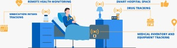
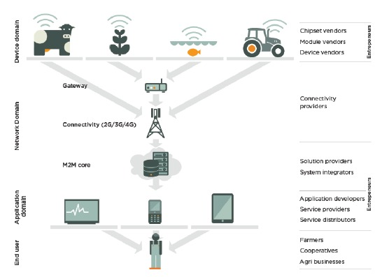
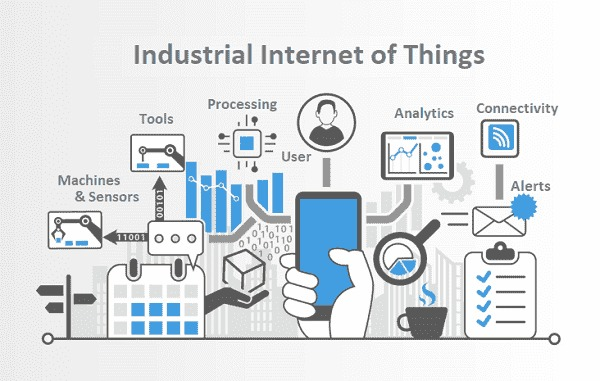

La veille technologique est le processus de surveillance et d'analyse continue des tendances, des développements et des innovations
dans le domaine de la technologie. Cela implique de collecter, d'analyser et de diffuser des informations pertinentes sur les avancées
technologiques dans un domaine particulier, comme les logiciels, le matériel informatique, les télécommunications, les médias sociaux,
l'Internet des objets, l'intelligence artificielle, etc.
Elle permet aux organisations et aux professionnels de rester à jour sur les dernières tendances et innovations technologiques, de comprendre
comment elles pourraient affecter leur activité ou leur domaine d'expertise, et de prendre des décisions éclairées en matière d'investissement,
de développement de produits, d'amélioration des processus, etc.
Les informations que l'on peut surveiller et analyser pour la veille technologique incluent les tendances de marché, les brevets technologiques,
les publications universitaires, les blogs d'experts, les communiqués de presse d'entreprises, les forums de discussion en ligne, les réseaux sociaux, etc.
Ma veille technologique se base sur l’IoT (l’internet des objets)
L’internet des objets connectés, qu’est-ce que c’est ?
L'IoT est un réseau de dispositifs physiques, tels que des capteurs, des appareils électroniques,
des véhicules et des bâtiments, qui sont connectés à Internet et peuvent échanger des données entre eux et avec
d'autres systèmes. Il peut également être utilisé pour créer des villes intelligentes, où les feux de signalisation, les caméras
de surveillance, les bornes d'information, etc. sont connectés entre eux. Les maisons intelligentes, quant à elles, peuvent être équipées de
capteurs pour surveiller la température, l'humidité, la qualité de l'air, etc. et ajuster les systèmes de chauffage, de ventilation et de
climatisation en conséquence.
Vidéo explicite sur le fonctionnement de l'iot
La santé
L’Iot peut être utilisé dans une grande variété de domaines, tels que:
dans le domaine de la santé, l'IoT peut être utilisé pour surveiller les patients à distance, collecter des
données de santé, et envoyer des alertes en cas d'urgence.

L'agriculture
Grâce aux nouveaux outils IoT, les agriculteurs peuvent surveiller les conditions de leurs champs depuis n’importe où. Ils peuvent
également choisir entre des options manuelles et automatisées pour prendre les mesures nécessaires en fonction des données
collectées (lumière, humidité, température, santé des cultures) mais peut également être utilisé pour surveiller les cultures
et les animaux, contrôler l'irrigation.

L’industrie
L'IoT offre de nombreux avantages pour l'industrie, notamment l'amélioration de l'efficacité, la réduction des coûts,
l'amélioration de la qualité des produits et la sécurité des travailleurs.
La mise en place de ma veille technologique sur l'IoT a pour but:
D'aider à surveiller les évolutions et les tendances de cette technologie.
D’anticiper les opportunités et les menaces.
De prendre des décisions éclairées pour tirer parti de son potentiel tout en minimisant les risques.
